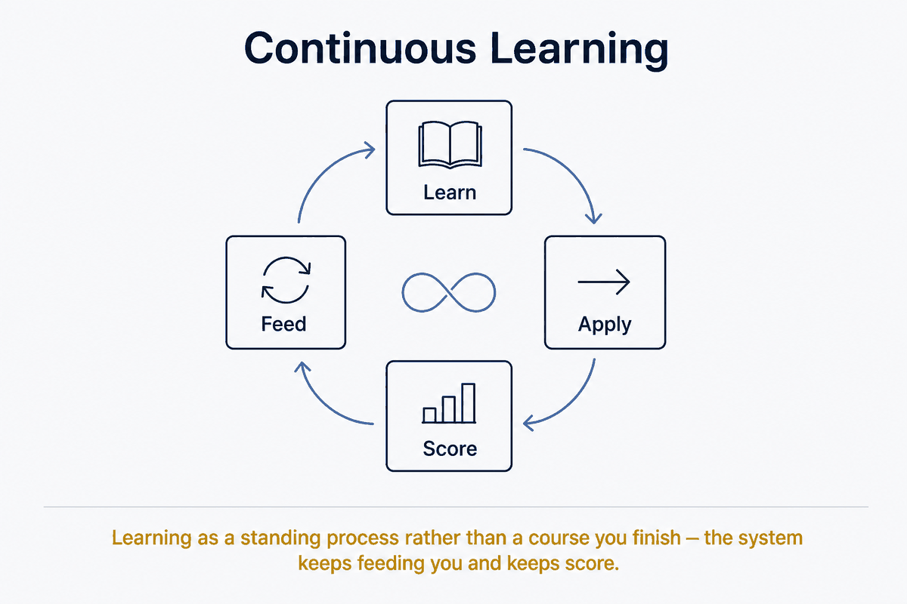

Learning as a standing process rather than a course you finish — the system keeps feeding you and keeps score.

A few knowledge bites from your own vault, shared with you every day — small pieces of what you already captured, brought back under your attention so it sticks instead of silting up.
Learning points inward: not pulling new things out of the world, but anchoring existing knowledge in your vault more deeply. It is the counterpart of Continuous Exploration — same infrastructure (agents, rules, daily delivery), opposite goal. Exploration widens; Learning deepens.
This solves a quiet problem: a vault grows faster than you reread it. What you captured a year ago sinks away. Without a mechanism that brings it back, your vault becomes an archive you have instead of knowledge you own.
Which bites come by today is itself a form of Recommendation (Affinity Matching) — but applied to your own material rather than to the world. Affinity decides what is worth anchoring; the learning mechanism underneath decides when you see it again.
Daily knowledge bites only become real learning once they are timed. Loose repetition without rhythm is noise. The underlying concept that gives it force is Spaced Repetition (Flashcards): seeing something again just before you forget it, so it stays with minimal effort. Continuous Learning is the daily form; spaced repetition is the engine that decides what may come by that day.